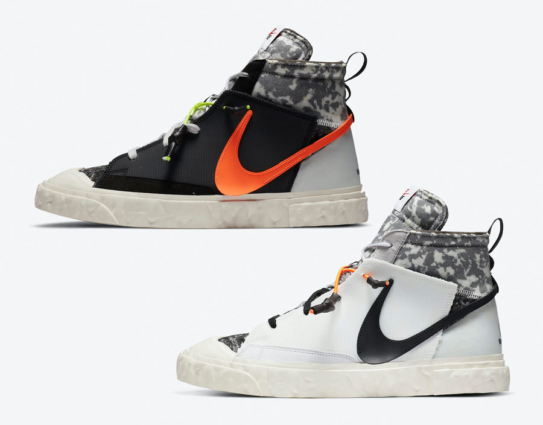

READYMADE x Nike Blazer Mid: Cái bắt tay chất lừ mang Nike Blazer trở lại đường đua
12/01/2022
Mặc dù Nike Blazer không phải là một trong những dòng giày mang lại siêu lợi nhuận cho Nike như những người anh em khác, nhưng trong những năm gần đây, với xu hướng retro, Nike đã lên kế hoạch để mẫu giày này quay trở lại đường đua, mà READYMADE x Nike Blazer Mid là một siêu phẩm điển hình.

Ngôi sao mới READYMADE x Nike Blazer Mid
Quay trở lại với nhân vật chính, sau nhiều lần úp mở với dân tình về màn hợp tác đáng trông chờ này, cuối cùng thì READYMADE x Nike Blazer Mid cũng được phát hành với 2 phối màu Black/Vast Grey-Total Orange và White/Vast Grey-Total Orange
Nhìn vào đôi giày này, có thể thấy nó là tấm gương phản chiếu rõ nét nhất giá trị thiết kế cốt lõi của READYMADE và cảm giác hoài cổ của Hosokawa: tái thiết lại Blazer Mid trên nền ý tưởng DIY, nhưng vẫn giữ lại những nét tiêu biểu nhất của đôi giày phỏng theo dáng giày cổ điển từ năm 1971.
Phần thân trên của đôi giày được xếp xen nhiều lớp chất liệu khác nhau và đều được tận dụng từ nguyên vật liệu tái chế, với phần lưỡi gà được nhuộm họa tiết camo thủ công. Dây giày được thiết kế kỳ công, kết hợp bộ 3 dây giày với màu sắc, kích thước và kiểu dệt khác nhau tăng thêm điểm nhấn và sự phức tạp trong kết cấu của tổng thể đôi Blazer Mid.